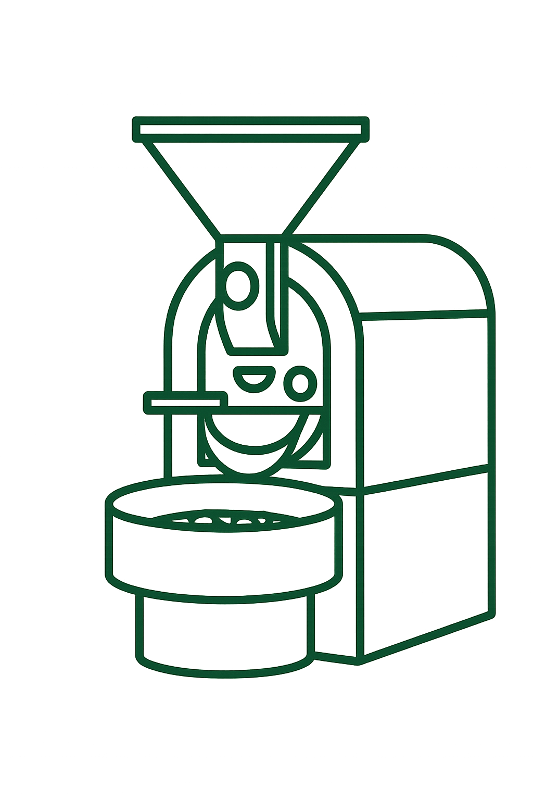

☰

Green Bean Coffee started as a weekend passion project roasting beans for friends and neighbors. Thanks to our loyal community, we've grown into a full coffee shop in the heart of York. We cherish direct relationships with farmers and believe a great cup begins with ethically sourced beans.
Our roasting process brings out the best flavors in every bean. Each batch is roasted on-site in small quantities for peak freshness. By carefully adjusting temperature and airflow, we highlight unique notes of caramel, fruit or chocolate. Every roast is monitored by hand to ensure a smooth and balanced cup.
